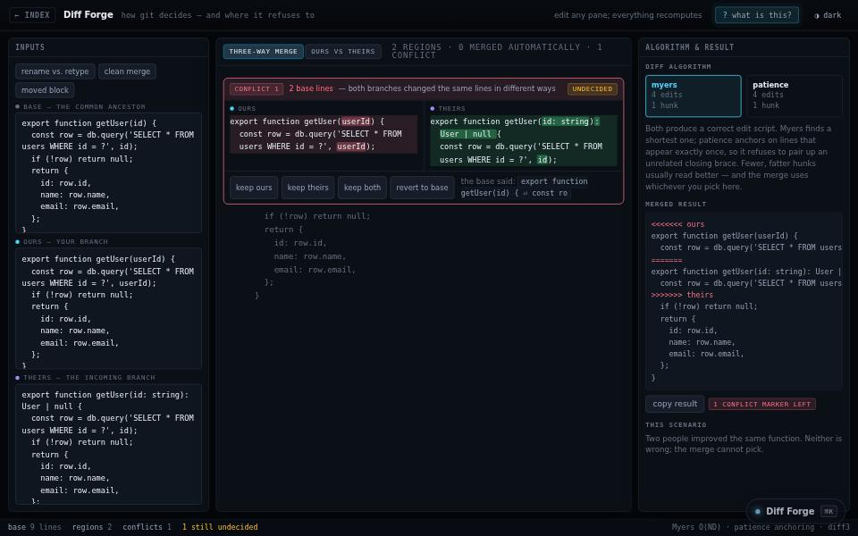

engineering tool · about 5 min · The Engine Rooms
Diff Forge
The merge conflict — software’s most hated screen — rebuilt as a choice you can actually read.

The problem
The merge-conflict screen hands you the decision without the information.
What it does
- Myers and patience diff side by side
- A three-way merge built around the moment you decide
- Both algorithms rerun on every keystroke
The most interesting decision
Two readings of the same change
Myers finds the shortest edit script and can shred a diff; patience anchors on lines that appear once on each side, giving fewer hunks that match what a person actually did.
Built with
- Myers diff
- Patience diff
- Three-way merge
Evidence
Two diff algorithms, side by side, on the same edit. Read its tests
Its world
An anvil where a red stream and a green stream are hammered into one.